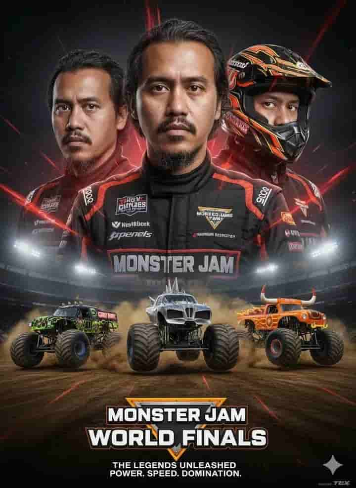

How to use this prompt
To use this Monster Jam AI prompt, first copy the full prompt from this page. Then, open your preferred AI art tool, such as MidJourney, DALL·E, or Stable Diffusion, and paste the prompt into the text box. Adjust any settings you like, such as image size, style, or quality, and then generate the image. Once it’s ready, you can save or download your epic Monster Jam World Finals poster featuring Grave Digger, Max-D, and El Toro Loco.
Prompt
Epic poster design for the Monster Jam World Finals, hyper-realistic and cinematic. A professional Monster Jam driver (attached photo) stands proudly in the center, wearing a sponsor-branded racing suit, serious expression. On the left side, a close-up portrait without a helmet; on the right side, a close-up portrait with helmet. Background is dark with glowing red streaks, symbolizing power, speed, and adrenaline.At the bottom, three iconic Monster Jam trucks leap into action on a dirt arena: Grave Digger with its black-green skull-and-flames livery, Max-D (Maximum Destruction) with spiked armor and metallic silver finish, El Toro Loco with its fiery orange bull horns. Dust explodes around the trucks as they perform dramatic jumps. Oversized tires, detailed textures, and glowing stadium lights emphasize the scale and energy of the World Finals.Bottom text: MONSTER JAM WORLD FINALS THE LEGENDS UNLEASHED POWER. SPEED. DOMINATION. Ultra-realistic quality, high resolution, with authentic branding and legendary Monster Jam trucks at their most epic.
Why this prompt works
This Monster Jam AI prompt works because it is detailed, specific, and designed to guide AI tools to create exactly what you want. It clearly describes the scene, the trucks (Grave Digger, Max-D, and El Toro Loco), the driver, and the cinematic style, which helps the AI generate high-quality, realistic images. By including key details like lighting, background, and action poses, the prompt ensures your poster looks epic and professional every time. Whether you’re a fan, a digital artist, or just experimenting with AI, this prompt gives consistent, impressive results with minimal effort.
Example Output
Here’s an example result generated with this exact prompt:
Prompt Variations
- Switch “dark background with glowing red streaks” → “dark night stadium with glowing blue streaks” for a dramatic night action scene.
- Replace “hyper-realistic cinematic style” → “comic book style with vibrant colors” for a fun, stylized look.
- Change “driver in center with portraits” → “focus on trucks jumping with driver smaller in background” for a truck-centered poster.
- Add “retro vintage textures and motion lines” for a classic, nostalgic poster vibe.
FAQ
Will this prompt make the trucks look realistic even in crazy action poses?Yes! The prompt is detailed enough to guide the AI in creating hyper-realistic trucks performing jumps, spins, and stunts while keeping the proportions, textures, and lighting believable.
Can I use this prompt to make a poster that looks like a real Monster Jam World Finals event?Definitely. By including details like the driver, stadium lights, dust, and iconic trucks, the AI can generate a cinematic, high-energy poster that feels like an authentic World Finals scene.